循香入庭，围坐知香
莞香展馆 · r27 模型预览已按确认的平面更新寻香厅：圆景与壁龛融入弧墙，主陈列墙连接香市故事，6席互动长台承接观察与讲述。
01 · 寻香新貌
弧墙圆景、一面主陈列墙、四个中央展台和6席互动长台，共同组织寻香厅。去顶视图。
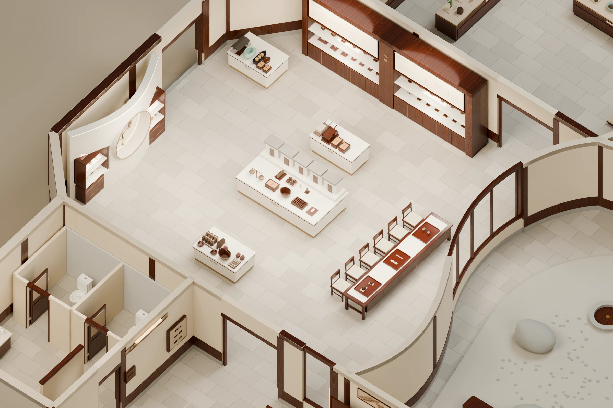
02 · 入厅 · 墙柜与展台
中棕木作与暖灰浅砂底色协调，香市主台形成观看重点。此视图显示室内天花。
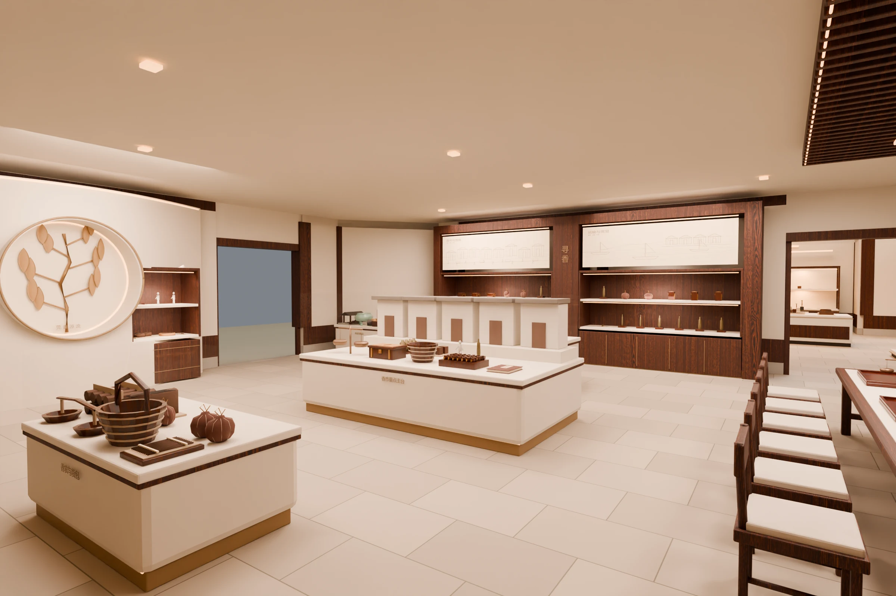
03 · 弧墙 · 莞香源流
封闭圆形景框结合莞香枝叶浅浮雕，前后两个局部壁龛呈现香材、工具与人物。
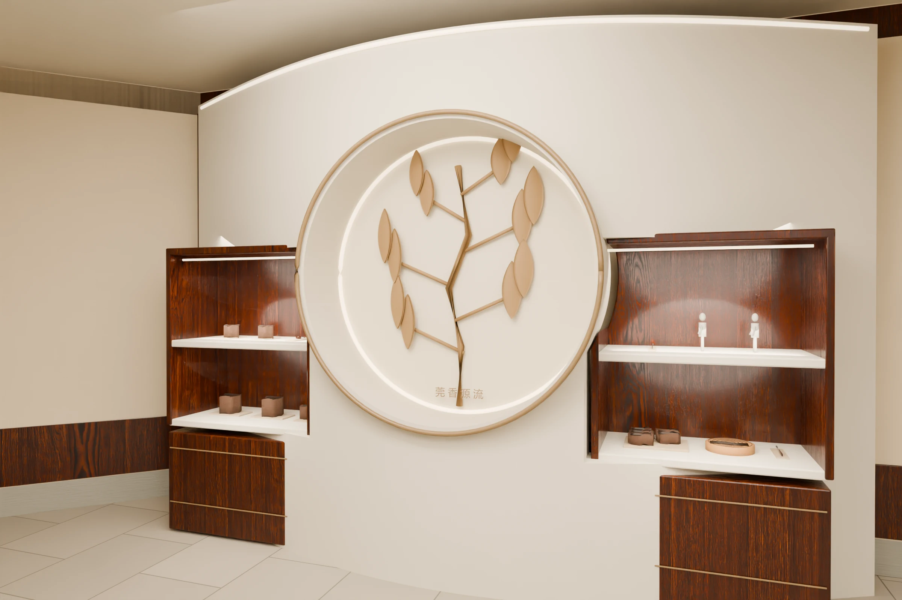
04 · 主墙 · 香市与贸易
7.15米连续墙柜整合储藏、双层陈列、香市图景和运输图景。
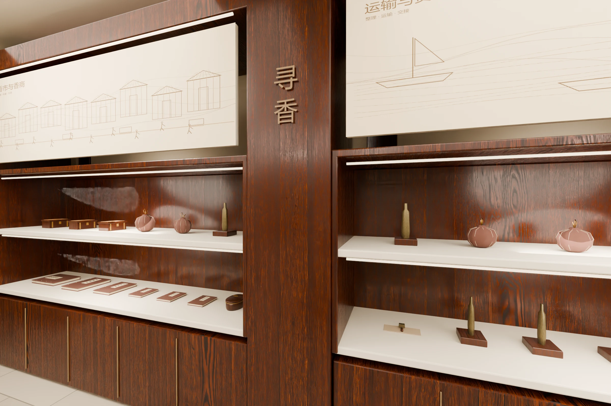
05 · 围坐 · 观察与讲述
6席位于长台同一侧，讲解者在对侧操作；香材观察、复制工具和模拟交易分成三个托盘。
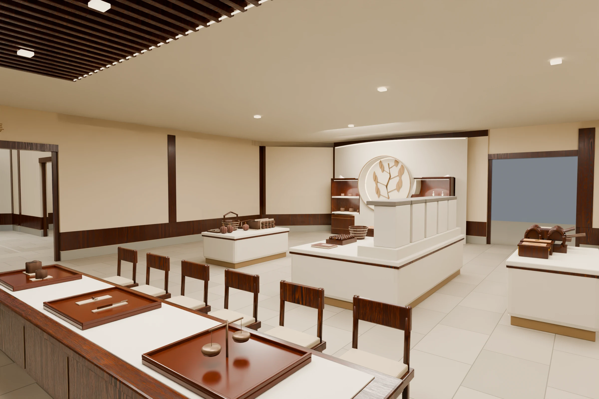
06 · 长台 · 六席单侧
4.6米长台配6把木椅，桌下保留膝部空间，对侧安排浅储物柜。
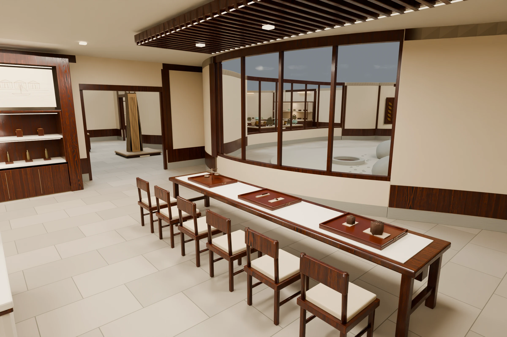
07 · 陈列 · 一主三辅
主台聚焦香市街铺，三个辅台分别呈现香农货包、陆路运输与水运码头。
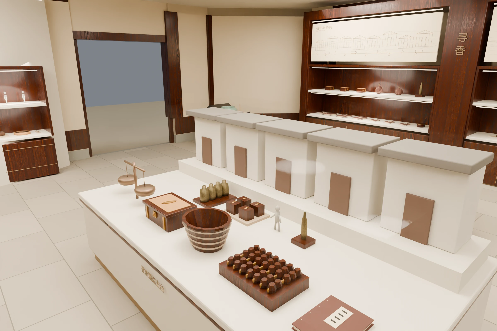
08 · 天花 · 局部木格
木格集中在互动长台上方，其余顶面采用暖浅底色。室内天花独立成组，可单独隐藏。
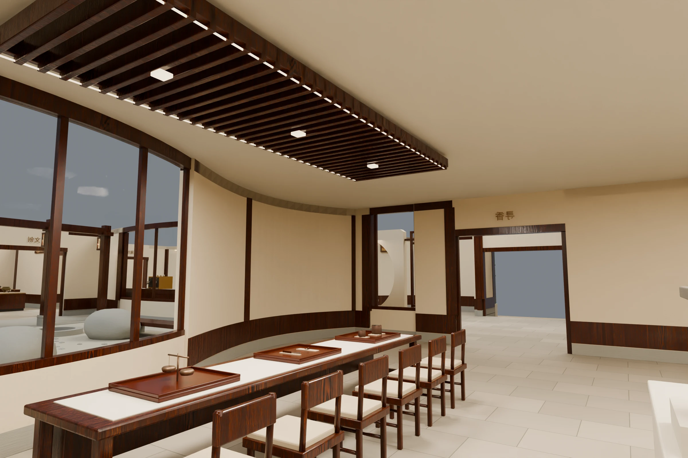
09 · 正俯 · 陈列与通行
按已确认的r26平面落位，门洞与借景窗延续。主参观线贯穿寻香，互动在侧边展开。
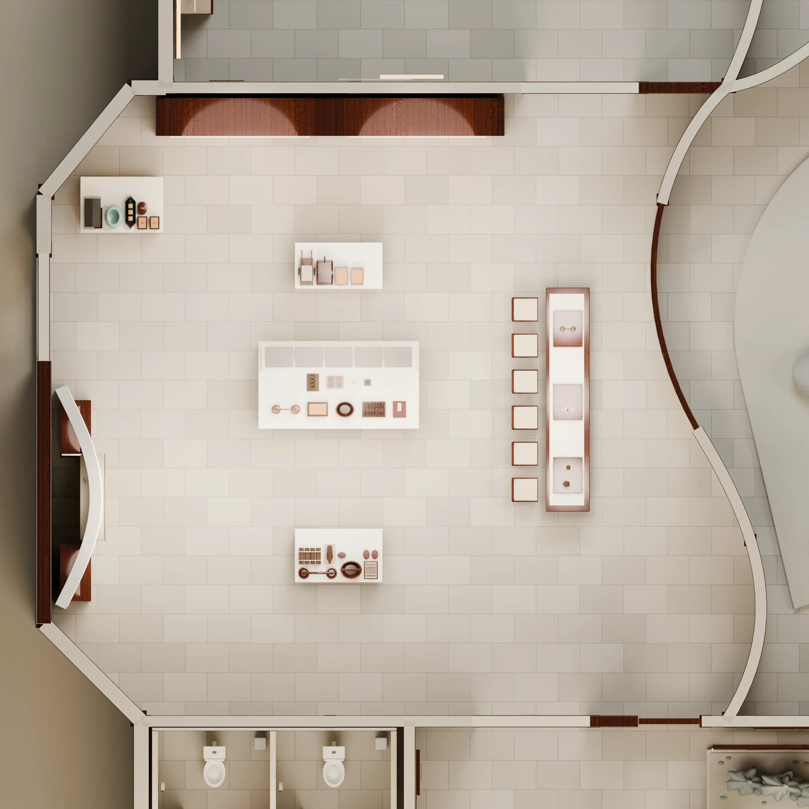
10 · 全馆 · 连续游园
寻香厅与已确认的全馆布局相连。400件或组拟展内容延续，新增互动教学道具单独登记。
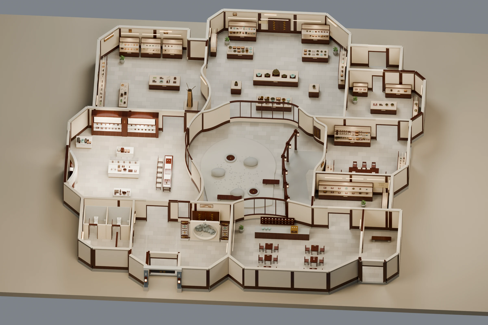
11 · 入口 · 岭南香庭
入口青砖、木匾与壁灯延续。
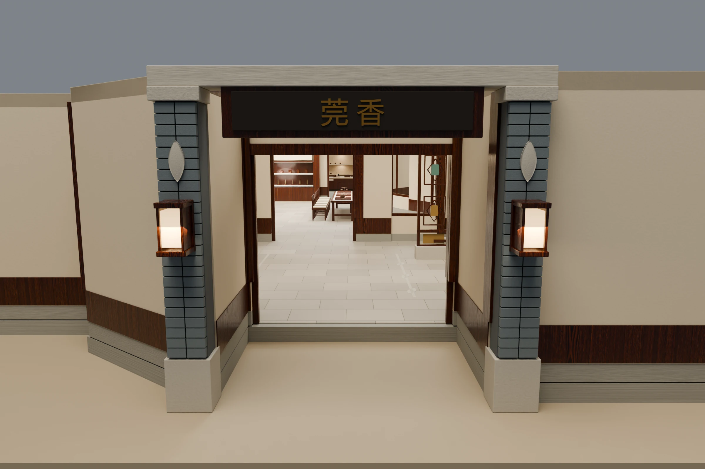
12 · 配套 · 两个独立厕位
两座马桶、双盆洗手区及门扇安排延续。
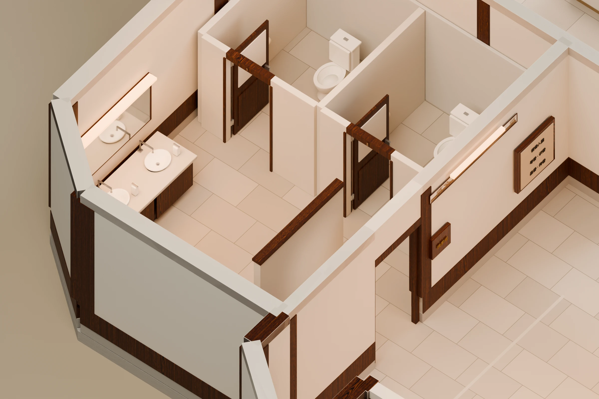
13 · 咖啡 · 四对桌椅
咖啡8张双人桌、16席，原传香手作区8席延续。
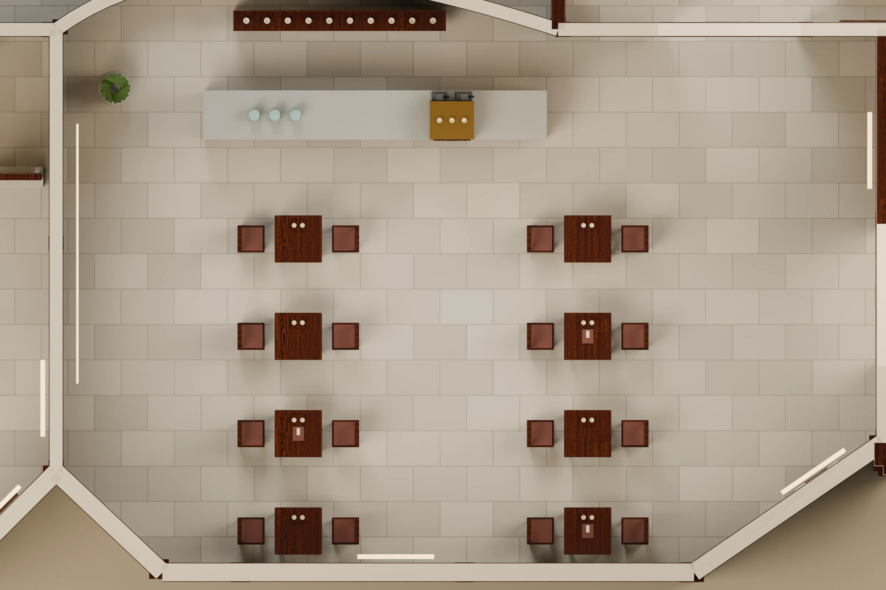